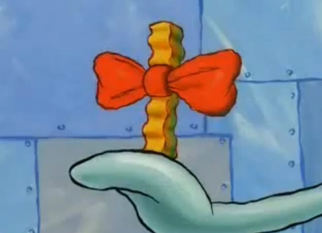

Kelp Fries

Kelp Fries are one of the many undersea delicacies served at the Krusty Krab.
Kelp Fries always begin with fresh sea potatoes, crinkle-cut in the perfect thickness for a crispy exterior and fluffy inside
INGREDIENTS:
- 1 pound of fresh sea potatoes, cut to shape with a sharp crinkle-cutter
- 1 quart of frying oil with a high smoke point
STEPS:
- Pour oil in fryer and set heat to 375o
- Roughly peel exterior of potatoes, cut into fries with crinkle-cutter
- Gently immerse fries in heated oil and cook 6-10 minutes or until edges are crispy and golden
- Add bowtie to the best fry of the batch (optional)
- Enjoy your Krusty Krab classic dish!